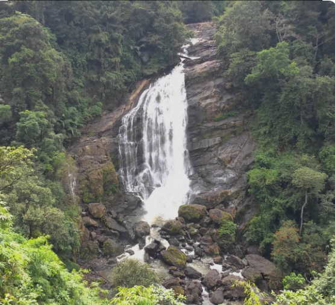
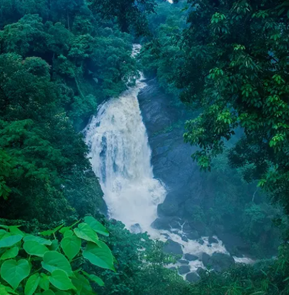
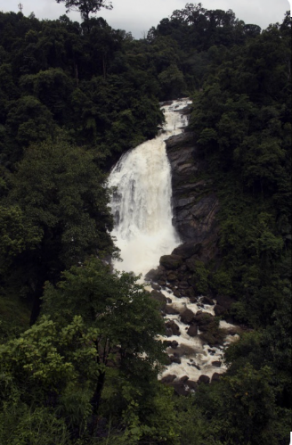
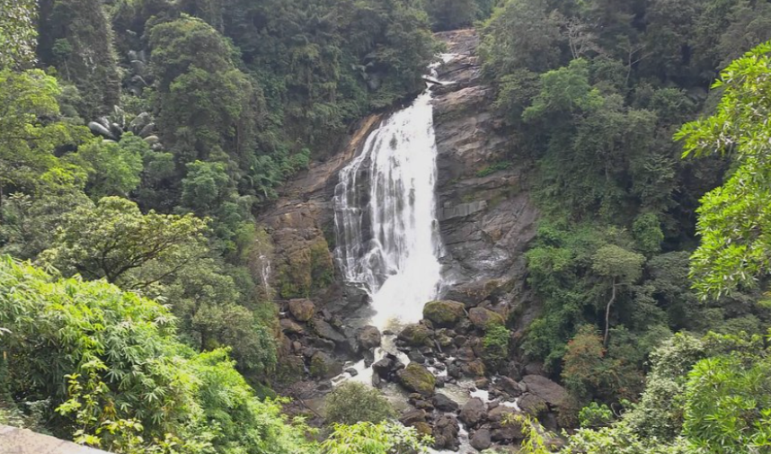
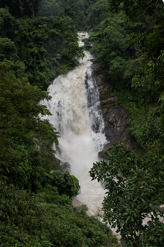

Valara Waterfalls is a picturesque waterfall located on the Kochi–Munnar Highway in Idukki district, Kerala. Surrounded by dense forests and green hills, the waterfall flows through rocky cliffs, creating a breathtaking natural view. It is one of the most popular stops for tourists travelling to Munnar because of its scenic beauty and peaceful atmosphere.
During the monsoon season, Valara Waterfalls becomes more powerful and attracts many visitors. The surrounding area is rich in natural vegetation and is home to several species of birds and butterflies. Visitors can enjoy photography, sightseeing, and the refreshing mountain air while experiencing the beauty of the Western Ghats. Valara Waterfalls is an ideal destination for nature lovers and travellers.





Valara Waterfalls is one of the most beautiful waterfalls in Idukki District, Kerala. It is located on National Highway 85 between Neriamangalam and Adimali on the way to Munnar. The waterfall is formed by the Deviyar River and is surrounded by dense evergreen forests of the Western Ghats. It is a popular stop for tourists because of its natural beauty and peaceful atmosphere.
Valara Waterfalls has been a natural attraction for many years. As tourism in Munnar developed, the waterfall became one of the most visited roadside attractions in Idukki. It is now recognized as an important eco-tourism destination because of its rich biodiversity and scenic surroundings.
Valara Waterfalls consists of a chain of beautiful cascades flowing through rocky slopes and thick forests. It is an excellent place for sightseeing, photography and enjoying the beauty of nature. During the monsoon season, the waterfall becomes even more spectacular with a strong flow of water.
The area is rich in evergreen forests, bamboo, medicinal plants and many native species of the Western Ghats. The dense greenery supports a variety of birds, butterflies and wildlife.
Today, Valara Waterfalls is one of the most popular roadside waterfalls in Kerala. Thousands of tourists visit every year to enjoy its chain of cascades, lush forests and peaceful surroundings. It is also an important eco-tourism destination in the Western Ghats.